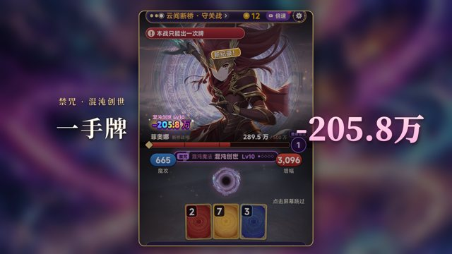
00.00 – 01.85 s
钩子：禁咒命中 −205.8 万
实机 boss4 take 39.9 s 起，0.8×（菲奥娜守关战，混沌创世 Lv10 命中）
禁咒 · 混沌创世 / 一手牌 / -205.8万

01.85 – 03.69 s
第一手牌：火星 Lv2，−52
实机 fstep take 1.3 s 起（魔蚀荒原第 1 战）
第一手牌 / 只能搓出一颗小火球 / 初级 · 火星 Lv2 / -52
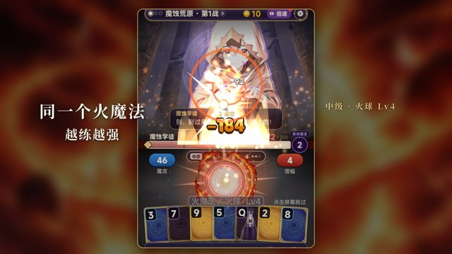
03.69 – 05.54 s
中级 · 火球 Lv4，−184
实机 fstep take 9.7 s 起
中级 · 火球 Lv4 / -184
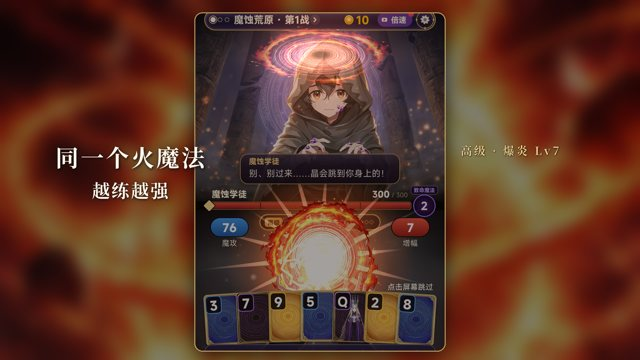
05.54 – 07.38 s
高级 · 爆炎 Lv7（游戏内 1.35 s 高级演出），−354
实机 fstep take 18.05 s 起，1.4 倍速
高级 · 爆炎 Lv7 / -354
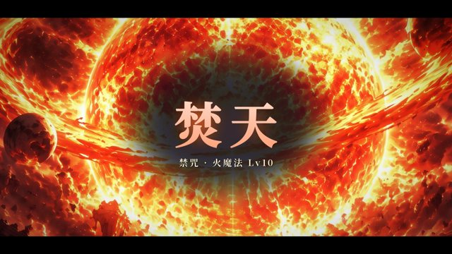
07.38 – 09.23 s
禁咒 · 焚天 全屏演出
游戏内禁咒关键帧 assets/image/ult/fire.jpg 的 HD 母版 art-source/1106/ult/fire_hd.jpg，推镜 + 白闪
禁咒 · 火魔法 Lv10 / 焚天
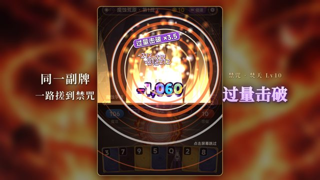
09.23 – 11.08 s
焚天命中，过量击破 ×3.5
实机 fstep take 31.45 s 起
同一副牌 / 一路搓到禁咒 / 禁咒 · 焚天 Lv10 / 过量击破
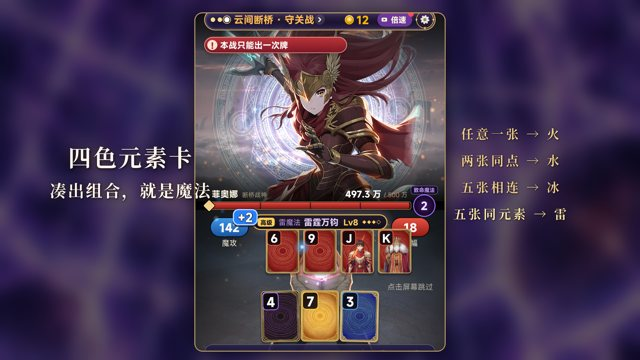
11.08 – 13.85 s
四色元素卡凑组合 → 雷霆万钧
实机 boss4 take 16.8 s 起，1.3 倍速
四色元素卡 / 凑出组合，就是魔法 / 任意一张 → 火 / 两张同点 → 水 / 五张相连 → 冰 / 五张同元素 → 雷
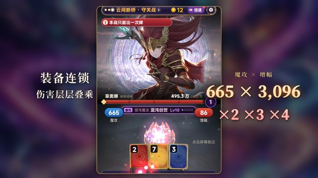
13.85 – 15.69 s
装备连锁 ×2 ×3 ×4，魔攻 665 × 增幅 3,096
实机 boss4 take 32.3 s 起
装备连锁 / 伤害层层叠乘 / ×2 ×3 ×4 / 魔攻 × 增幅 / 665 × 3,096
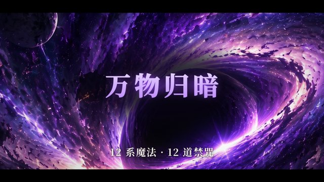
15.69 – 16.62 s
禁咒快剪：万物归暗
dark_hd.jpg
万物归暗
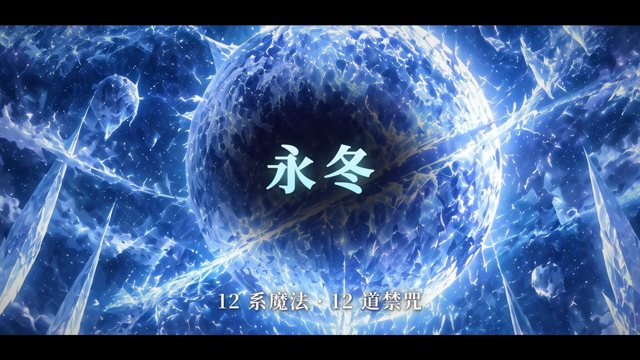
16.62 – 17.54 s
禁咒快剪：永冬
ice_hd.jpg
永冬

17.54 – 18.46 s
禁咒快剪：雷狱
thunder_hd.jpg
雷狱
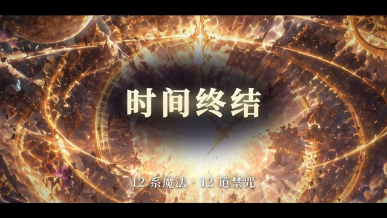
18.46 – 19.38 s
禁咒快剪：时间终结
time_hd.jpg
时间终结

19.38 – 20.31 s
禁咒快剪：维度崩塌
space_hd.jpg
维度崩塌
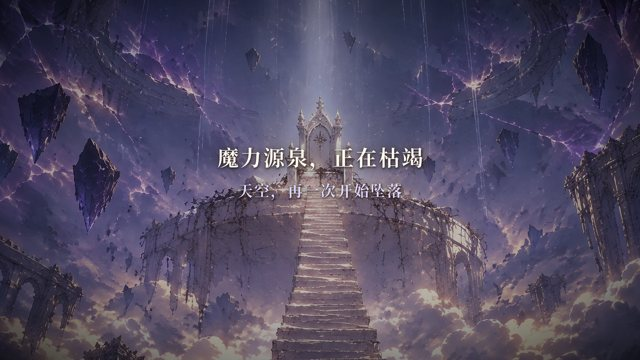
20.31 – 22.15 s
背景：源泉枯竭，天空坠落
开场 CG assets/image/intro/i5.jpg；字幕取自开场 CG 字幕
魔力源泉，正在枯竭 / 天空，再一次开始坠落

22.15 – 25.85 s
守关者 格雷戈尔 + 原声台词
立绘 assets/image/boss/b1_grey.png、关卡背景 stage/s1.jpg、配音 mg_b1_grey_enter_3.mp3
第 1 关 · 魔蚀荒原 / 格雷戈尔 / 蚀晶术士 / 「回去吧。再往上走，你会变成我。」

25.85 – 30.92 s
守关者 雷恩·卡斯坦 + 原声台词
b6_rain.png、stage/s6.jpg、mg_b6_rain_enter_2.mp3
第 6 关 · 天穹壁垒 / 雷恩 · 卡斯坦 / 熔冠天骑 / 「我见过一个人走上去。他再也没下来。」

30.92 – 31.38 s
守关者快闪：伊索尔德
b2_ise.png、stage/s2.jpg
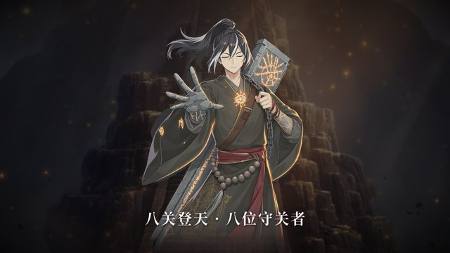
31.38 – 31.85 s
守关者快闪：巴尔德温
b3_bald.png、stage/s3.jpg
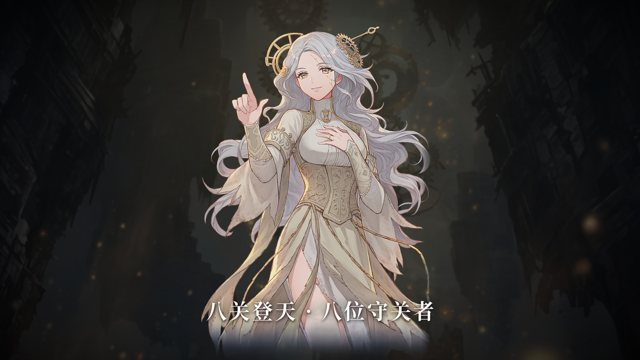
31.85 – 32.31 s
守关者快闪：克洛伊
b5_clo.png（原立绘）、stage/s5.jpg

32.31 – 32.77 s
守关者快闪：赛琳娜
b7_selin.png、stage/s7.jpg

32.77 – 36.46 s
守泉人薇丝塔 · 三百年前那一夜（只设问）
CG assets/image/story/cg/vesta_forehead.jpg（原图），原声 mg_guide_greet_3.mp3
守泉人 · 薇丝塔 / 三百年前那一夜 / 究竟发生了什么？ / 「我是守泉人。守着这处泉眼，也守着你。」
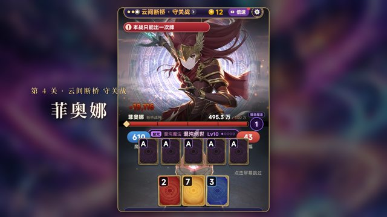
36.46 – 38.31 s
守关战 菲奥娜：五张同点 → 混沌创世
实机 boss4 take 28.2 s 起，1.4 倍速
第 4 关 · 云间断桥 守关战 / 菲奥娜

38.31 – 40.15 s
禁咒 · 混沌创世 全屏演出
chaos_hd.jpg
禁咒 · 混沌魔法 Lv10 / 混沌创世
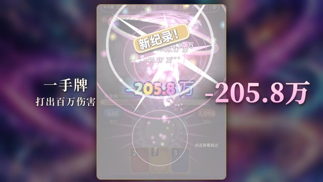
40.15 – 42.00 s
命中 −205.8 万
实机 boss4 take 38.3 s 起
-205.8万 / 一手牌 / 打出百万伤害
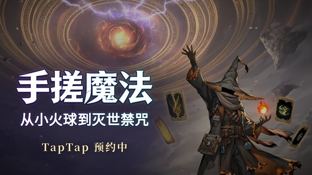
42.00 – 45.31 s
片尾：主视觉 + 字标 + TapTap 预约中
art-source/store/1107/kv_wide_sr.png（16:9 宣传图同源）+ store/1107/logo.png